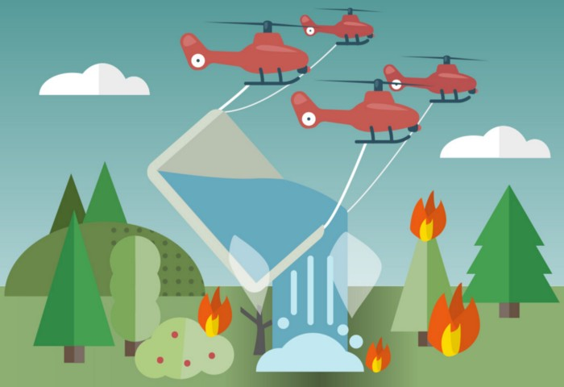
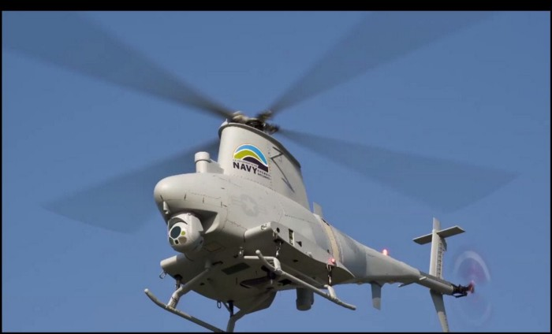
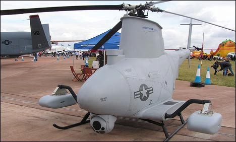
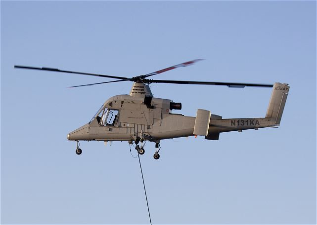

Take four drones capable of heavy lifting and use some of the same software used at the GRASP Lab, University of Pennsylvania, to control multiple drones, as in this video:
Then attach a LARGE bag that can hold a LARGE amount of water:

Perhaps some of these drones could be used:



Heavy Lifting by Drones
Commercially operated drones doing the heavy lifting for many. Small drones, medium-sized drones and lifting capabilities at a more advanced level than we see today will create a more sustainable environment.
This development could create more advantageous and affordable drones capable of lifting much more water than we see today. It will also give the drone operator more flexibility when controlling the drones with a more complex yet simpler guidance system.
The system guides itself; the operator only needs to monitor it and follow the procedure.
In the long term, an AI could perform the monitoring and give notice if any problems arise with the drones.
Through machine learning, the drones can continue learning after each trip and become even more reliable.
Eventually, smaller drones will keep an 'eye' on every forest and jungle. They will alert the control centre and send a group of drones to extinguish the fire immediately.